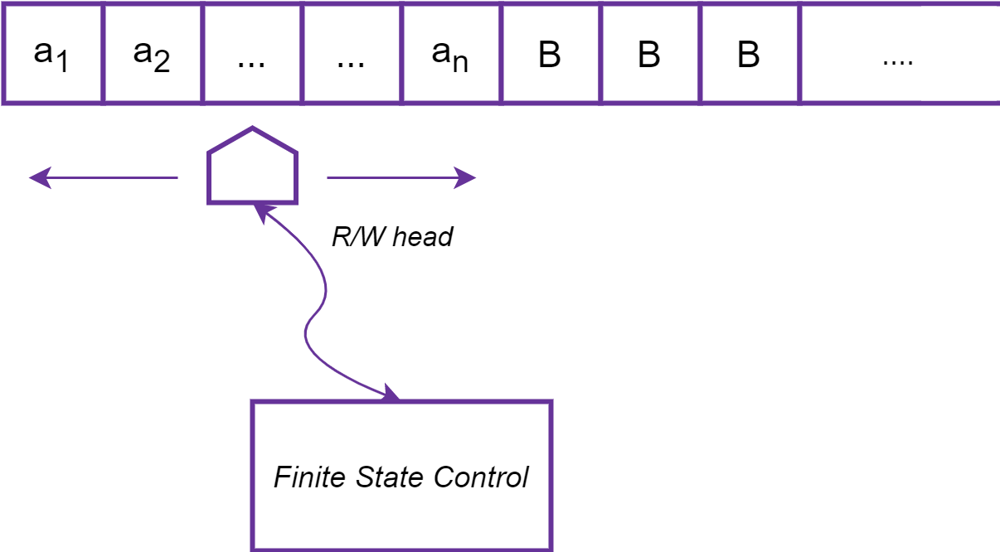
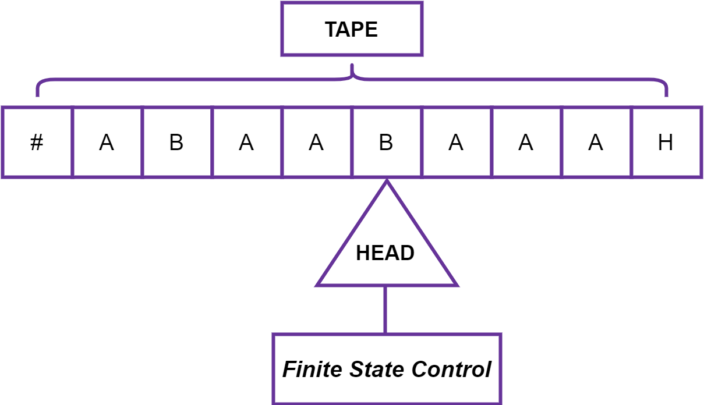
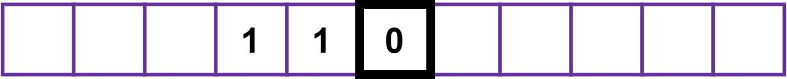
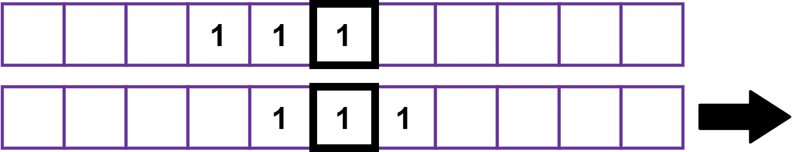
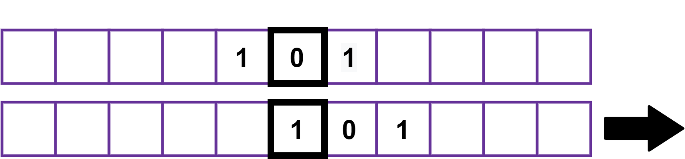
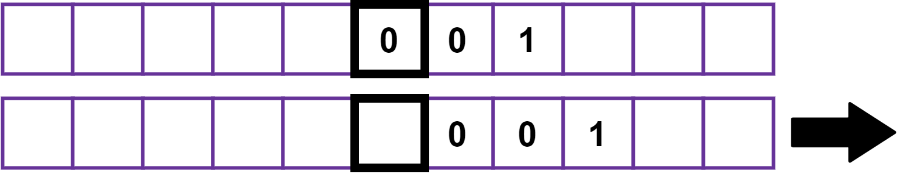

Sejarah dan Pengertian Mesin Turing
Mesin Turing ditemukan pada tahun 1936 oleh Alan Turing, yang menyebutnya sebagai "mesin" (mesin otomatis).
Dengan model ini, Turing mampu menjawab dua pertanyaan negatif yaitu Apakah ada mesin yang dapat menentukan
apakah mesin sembarang pada pita itu "melingkar" (misalnya, membeku, atau gagal melanjutkan komputasi tugas)?
dan apakah ada mesin yang dapat menentukan apakah ada mesin sewenang-wenang pada kasetnya yang
pernah mencetak simbol tertentu? Jadi dengan memberikan deskripsi matematis dari perangkat yang sangat sederhana
yang mampu melakukan perhitungan sewenang-wenang, ia mampu membuktikan sifat komputasi secara umum – dan
khususnya, ketidaktercomputasian Entscheidungsproblem ('masalah keputusan'). Mesin turing membuktikan adanya
batasan fundamental pada kekuatan komputasi mekanis. Meskipun mereka dapat mengekspresikan penghitungan
sewenang-wenang, desain minimalis membuatnya tidak cocok untuk komputasi dalam praktiknya: komputer
dunia nyata didasarkan pada desain berbeda yang, tidak seperti mesin Turing, menggunakan memori akses acak.
Mesin Turing adalah model komputasi teoritis yang ditemukan oleh Alan Turing, berfungsi sebagai model ideal
untuk melakukan perhitungan matematis. Walaupun model ideal ini diperkenalkan sebelum komputer nyata dibangun,
model ini tetap diterima kalangan ilmu komputer sebagai model komputer yang sesuai untuk menentukan apakah suatu
fungsi dapat selesaikan oleh komputer atau tidak (menentukan computable function). Mesin Turing terkenal dengan
ungkapan ”Apapun yang bisa dilakukan oleh Mesin Turing pasti bisa dilakukan oleh komputer.” Mesin Turing sendiri
merupakan model yang sangat sederhana dari komputer. Secara esensial, mesin Turing adalah sebuah finite automaton
yang miliki sebuah tape tunggal dengan panjang tak terhingga yang dapat membaca dan menulis data.
Model Mesin Turing
Mesin Turing memiliki tiga bagian utama, yaitu sebagai berikut:
- Bintang pertunjukan adalah gulungan tape yang tak terbatas yang dibagi ke dalam kotak-kotak atau sel-sel. Tape ini dapat digunakan untuk menulis, dan simbol tertulis dapat dihapus atau ditulis ulang dengan yang berbeda.
- Hal yang melakukan penulisan adalah head. Kepala dapat bergerak ke atas dan ke bawah pita dan menulis, menghapus atau menulis ulang simbol pada tape. Seperti head di hard disk.
- Ada juga state register (FSC), yang merupakan memori mesin. Ini memegang status mesin saat ini. Otak dari TM, diimplementasikan dari algoritma pengenalan kalimat.
Pada keadaan awal, n sel pertama dari pita masukan berisi rangkaian simbol yang harus dikenali
(dinyatakan sebagai a1, a2, …, an). Sel di sebelah kanan rangkaian simbol berisi B.

Prinsip Kerja Mesin Turing
Pada awalnya, input yang merupakan string dari simbol dengan panjang berhingga dipilih dari input alphabet,
ditempatkan pada tape. Sel-sel tape yang lain, perluasan secara infinite ke kiri dan ke kanan, pada awalnya
menampung simbol khusus yang dinamakan blank. Blank bukan sebuah input symbol, dan mungkin terdapat simbol
tape yang lain disamping input symbol dan blank.
Terdapat sebuah tape head yang selalu ditempatkan pada salah satu dari sel-sel tape. Mesin turing dikatakan
men-scan sel tersebut. Pada awalnya, tape head berada pada sel paling kiri yang menampung input. Sebuah
pergerakan mesin Turing adalah sebuah fungsi dari state dari finite control dan tape symbol yang di-scan.
Dalam satu pergerakan, mesin Turing akan:
- Merubah state. Next state dapat sama dengan current state.
- Menulis sebuah tape symbol dalam sel yang di-scan. Tape symbol ini mengganti symbol apapun yang ada dalam sel tersebut. Secara opsional, simbol yang dituliskan dapat sama dengan simbol yang sekarang ada dalam tape.
- Memindahkan tape head ke kiri atau ke kanan.
Spesifikasi Mesin Turing
Adapun spesifikasi dari Mesin Turing yaitu sebagai berikut:
- Mesin Turing memiliki pita berupa array sebagai memori yang dapat menyimpan sebuah simbol tunggal.
- Mesin Turing juga memiliki Head fungsinya Sebagai Penunjuk Posisi yang diakses oleh Pita.
- Head pada Mesin Turing juga dapat bergerak ke-kanan dan ke-kiri pada pita sesuai fungsi transisi yang ditetapkan untuk membaca inputan.
- Head juga Mampu melakukan tugas untuk menghapus dan mengubah isi dari Pita.
7 - Tuple Mesin Turing
M = (Q, S, G, d, q0, B, F)
Komponen-komponennya adalah sebagai berikut:
- Q : Himpunan berhingga dari state dari finite control.
- S : Himpunan berhingga dari simbol-simbol input.
- G : Himpunan dari tape symbol. S merupakan subset dari G.
- d : Fungsi transisi. Argumen d(q, X) adalah sebuah state q dan sebuah tape symbol X.
Nilai dari d(q, X), jika nilai tersebut didefinisikan, adalah triple (p, Y, D), dimana:
- p adalah next state dalam Q
- Y adalah simbol, dalam G, ditulis dalam sel yang sedang di-scan, menggantikan simbol apapun yang ada dalam sel tersebut.
- D adalah arah, berupa L atau R, berturut-turut menyatakan left atau right, dan menyatakan arah dimana head bergerak.
- q0 : Start state, sebuah anggota dari Q, dimana pada saat awal finite control ditemukan.
- B : Simbol blank. Simbol ini ada dalam G tapi tidak dalam S, yaitu B bukan sebuah simbol input.
- F : Himpunan dari final state, subset dari Q.
Representasi Mesin Turing
Mesin Turing menggunakan notasi seperti ID-ID pada PDA untuk menyatakan konfigurasi dari komputasinya.
Dan adapun contoh gambar dari Representasi Mesin Turing yaitu sebagai berikut:

Mesin terdiri dari sebuah finite control, yang dapat berada dalam sebuah himpunan berhingga dari state.
Terdapat sebuah tape yang dibagi ke dalam kotak-kotak atau sel-sel. Setiap sel dapat menampung sebuah dari
sejumlah berhingga dari simbol. Pada awalnya, input yang merupakan string dari simbol dengan panjang
berhingga dipilih dari input alphabet, ditempatkan pada tape.
Lebih jelasnya sebagai berikut:
- Sel-sel tape yang lain, perluasan secara infinite ke kiri dan ke kanan, pada awalnya menampung simbol khusus yang dinamakan blank.
- Blank bukan sebuah input symbol, dan mungkin terdapat simbol tape yang lain disamping input symbol dan blank.
- Terdapat sebuah tape head yang selalu ditempatkan pada salah satu dari sel-sel tape.
- Mesin turing dikatakan men-scan sel tersebut. Pada awalnya, tape head berada pada sel paling kiri yang menampung input.
Contoh Penerepan Mesin Turing
Sebuah program sederhana, Dengan simbol "1 1 0" tercetak pada tape, mari kita coba untuk mengubah 1s menjadi 0 dan sebaliknya. Ini disebut inversi bit, karena 1s dan 0s adalah bit dalam biner. Ini dapat dilakukan dengan meneruskan instruksi berikut ke mesin Turing, memanfaatkan kemampuan membaca mesin untuk memutuskan operasi selanjutnya sendiri. Instruksi ini membuat program sederhana.
| Symbol Read | Write Instruction | Move Instruction |
|---|---|---|
| Blank | None | None |
| 0 | Write 1 | Move Tape to the Right |
| 1 | Write 0 | Move Tape to the Right |
Mesin pertama-tama akan membaca simbol di bawah head, menulis simbol baru yang sesuai, kemudian
memindahkan pita ke kiri atau ke kanan seperti yang diinstruksikan, sebelum mengulangi urutan
baca-tulis-pindah lagi.

Simbol saat ini di bawah head adalah 0, jadi ditulis 1 dan memindahkan pita ke kanan dengan satu kotak.

Simbol yang sedang dibaca sekarang adalah 1, jadi kita tulis 0 dan pindahkan tape ke kanan sebanyak satu kotak:

Demikian pula, simbol yang dibaca adalah 1, jadi kami ulangi instruksi yang sama.

Akhirnya, simbol 'kosong' dibaca, sehingga mesin tidak melakukan apa pun selain membaca simbol kosong secara terus menerus karena kami telah menginstruksikannya untuk mengulangi urutan baca-tulis-pindah tanpa berhenti. Nyatanya, programnya belum selesai. Bagaimana mesin mengulangi urutan tanpa henti, dan bagaimana mesin berhenti menjalankan program? Program tersebut memberitahukannya dengan konsep machine state.
Referensi
GeeksForGeeks: Turing Machine in TOC
Liani Salim: Pengertian dan Contoh Mesin Turing
Rikardonababan: Makalah Mesin Turing